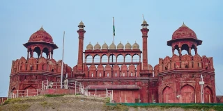
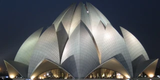

दिल्ली
Delhi
28.7041° N, 77.1025° E
not the national capital but a city containing the capital
the largest metropolitan area in its country
a majority Hindu area
a city containing 15% more men than women
the second largest metropolitan area in the world

दिल्ली, भारत
Delhi, India
National Capital Territory
Federal District


कमल मंदिर
Lotus Temple
Bahá'í
Sikh